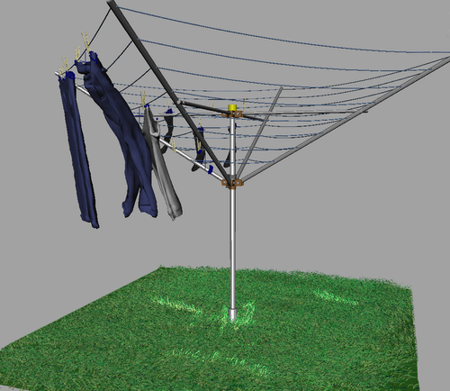

创建和编辑 nCloth

创建 nCloth(Create nCloth)
创建 nCloth 对象时，请注意以下事项：
仅可以从多边形网格创建 nCloth 对象。
多边形网格的分辨率越高，创建 nCloth 对象所使用的碰撞的质量就越高。
请不要为 nCloth 使用包含长细条状三角形的多边形网格。
请不要在进行模拟时更改 nCloth 对象的拓扑。更改 nCloth 对象的拓扑（对更改了顶点的网格曲面的修改）可能会导致碰撞失败。
本节内容
创建网格 nCloth
指定 Nucleus 解算器
设置 nCloth 特性
设置 nCloth 的“初始状态”(Initial State)
移除 nCloth
处理大型 nCloth 对象
使用属性预设和示例创建 nCloth
绘制 nCloth 特性贴图
创建 nCloth 碰撞
编辑 nCloth 碰撞
提高 nCloth 碰撞质量
使用 nCloth 生成力场
创建刚性 nCloth 壳
为 nCloth 创建外力
创建和编辑 nCloth 缓存
nCloth 示例和技术
父主题：
nCloth